Singapura adalah salah satu tujuan wisata paling populer di dunia. Meskipun luasnya hanya sekitar 733 km², negara kota ini menawarkan pengalaman wisata yang luar biasa beragam — mulai dari taman futuristik, kawasan budaya yang kaya sejarah, wahana hiburan kelas dunia, hingga surga kuliner yang telah diakui UNESCO.
Setiap sudut Singapura dirancang dengan cermat untuk memadukan modernitas dan warisan budaya. Wisatawan dari seluruh penjuru dunia datang untuk menyaksikan keajaiban arsitektur, merasakan keberagaman etnis, dan menikmati pengalaman kuliner yang tak tertandingi.
Lompat cepat ke destinasi:
Tips Wisata bisa dilihat disini Jelajahi Wisata LainnyaMarina Bay Sands adalah kompleks resort terintegrasi yang menjadi ikon paling dikenal di Singapura. Dibangun di atas lahan reklamasi seluas 15,5 hektare, bangunan ini terdiri dari tiga menara setinggi 55 lantai yang dihubungkan oleh platform raksasa berbentuk kapal yang disebut SkyPark.
Di puncak bangunan terdapat infinity pool sepanjang 150 meter yang menawarkan pemandangan cakrawala kota paling spektakuler di Asia. Selain hotel mewah, Marina Bay Sands juga menampung pusat perbelanjaan premium, kasino terbesar di Asia, teater, dan museum seni ArtScience Museum yang berbentuk seperti bunga teratai.
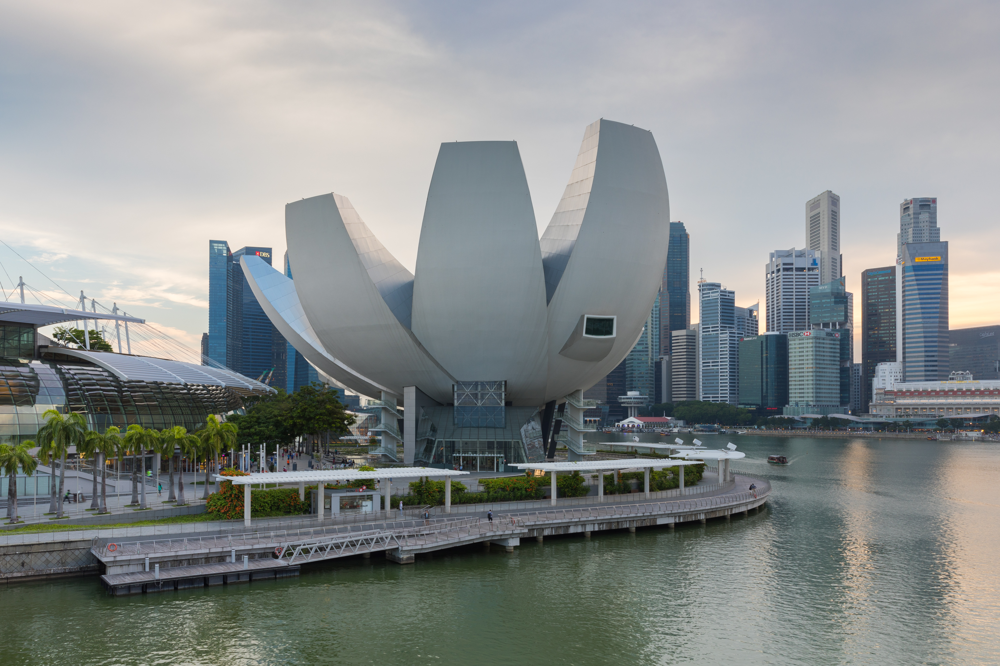
Berlokasi di Marina Bay Sands, ArtScience Museum merupakan tempat bertemunya seni dan ilmu pengetahuan melalui pameran yang canggih dan interaktif. Bangunannya yang ikonis berbentuk seperti bunga teratai yang terbuka. Salah satu pameran permanen yang paling terkenal adalah Future World, di mana instalasi seni digital memukau dari teamLab menciptakan pengalaman imersif penuh cahaya dan warna yang merespons sentuhan pengunjung.
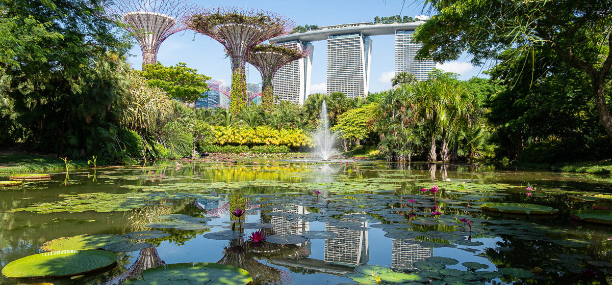
Gardens by the Bay adalah taman seluas 101 hektare yang telah menjadi simbol keberlanjutan lingkungan Singapura. Taman ini menampilkan 18 Supertree — struktur vertikal setinggi 25–50 meter yang ditumbuhi ribuan tanaman tropis dan dilengkapi panel surya serta sistem pengumpul air hujan.
Di dalam taman terdapat dua kubah konservasi berteknologi tinggi: Flower Dome yang menampilkan tanaman dari iklim Mediterania, dan Cloud Forest yang menghadirkan ekosistem dataran tinggi tropis dengan air terjun indoor setinggi 35 meter. Pada malam hari, pertunjukan cahaya "Garden Rhapsody" menyulap Supertree menjadi panggung visual yang memukau.
Sentosa adalah pulau resor seluas 500 hektare yang telah bertransformasi dari bekas pangkalan militer Inggris menjadi taman hiburan terkemuka di Asia. Pulau ini dapat dicapai dengan monorail, cable car, jembatan berjalan, atau taksi dari daratan Singapura.
Sentosa menampung Universal Studios Singapore — taman hiburan berlisensi resmi dengan wahana berbasis film Hollywood. Selain itu tersedia S.E.A. Aquarium yang menampung lebih dari 100.000 hewan laut, Adventure Cove Waterpark, pantai-pantai berpasir putih buatan, serta kawasan Resorts World Sentosa dengan hotel dan kasino kelas dunia.
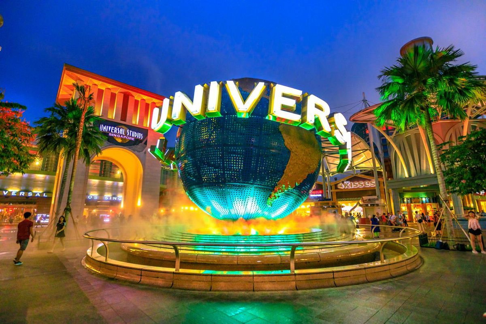
Melengkapi keseruan di Sentosa Island, Universal Studios Singapore hadir sebagai taman hiburan bertema film Hollywood pertama di Asia Tenggara. Menawarkan beragam zona tematik dengan wahana dan pertunjukan spektakuler yang diadaptasi dari film-film blockbuster, tempat ini menjanjikan pengalaman liburan tak terlupakan bagi pengunjung dari segala usia.
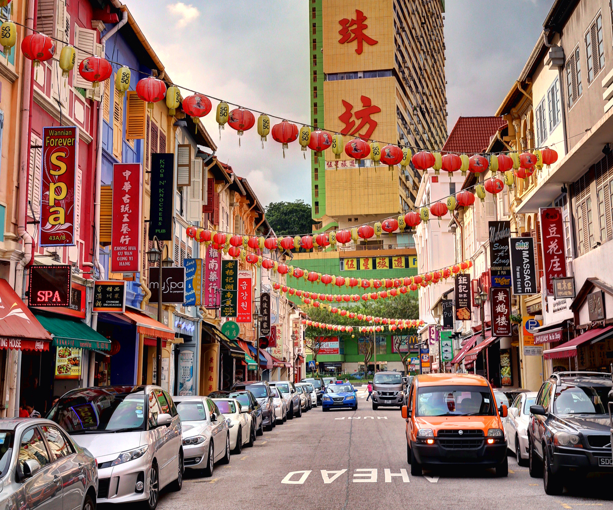
Singapura menyimpan tiga kawasan budaya bersejarah yang mencerminkan kemajemukan etnisnya. Chinatown dengan kuil Buddha Tooth Relic, deretan ruko klasik, dan pasar malam yang ramai. Little India dengan warna-warni toko bunga, kuil Sri Veeramakaliamman, dan aroma rempah yang khas.
Kampong Glam adalah kawasan Melayu-Arab dengan Masjid Sultan yang megah, serta Haji Lane — gang sempit penuh mural seni dan butik unik yang menjadi surga para pecinta budaya dan fotografi. Ketiga kawasan ini mudah dijangkau dengan MRT dan bisa dieksplorasi dalam satu hari.
Singapore Zoo diakui sebagai salah satu kebun binatang terbaik di dunia berkat konsep "open zoo" yang meniadakan kandang tertutup. Satwa hidup di habitat yang menyerupai alam liar, dipisahkan dari pengunjung menggunakan parit dan vegetasi alami sehingga menciptakan pengalaman yang imersif.
Kawasan Mandai Wildlife Reserve juga menampung Night Safari — safari malam pertama di dunia — serta Jurong Bird Park dengan koleksi burung terlengkap di Asia. Ditambah Singapore Botanic Gardens yang telah menjadi Situs Warisan Dunia UNESCO, Singapura membuktikan bahwa kota modern dan alam dapat hidup berdampingan secara harmonis.
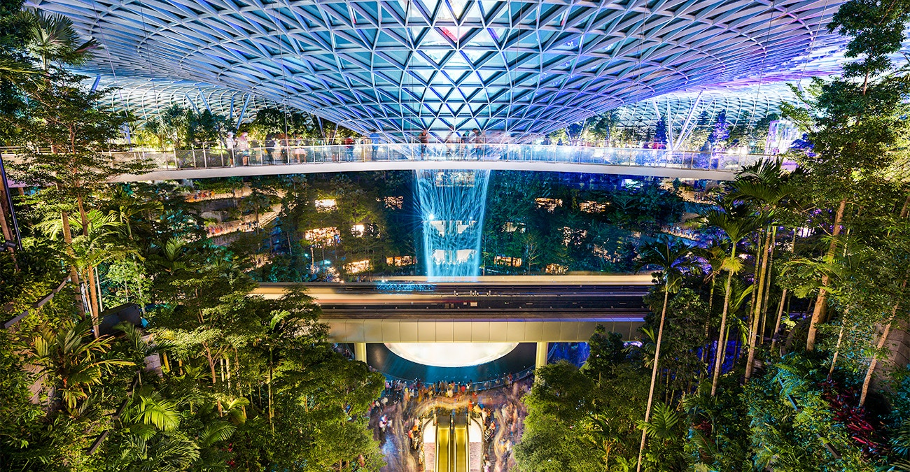
Pusat hiburan bertema alam bernuansa futuristik yang terletak di dalam area bandara Changi...
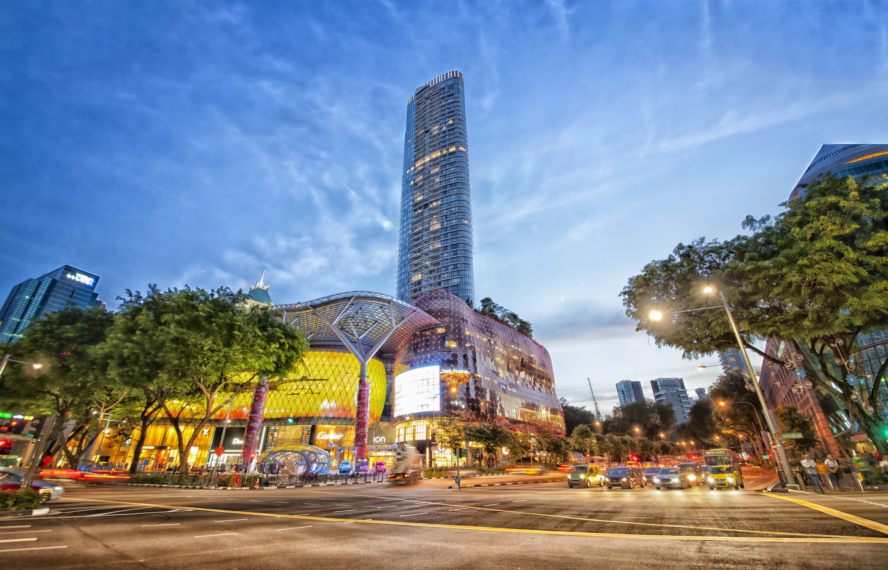
Salah satu pusat perbelanjaan terbesar di Singapura yang menawarkan berbagai macam barang mewah dan kebutuhan sehari-hari dan sebagai mall terbaik di Singapura
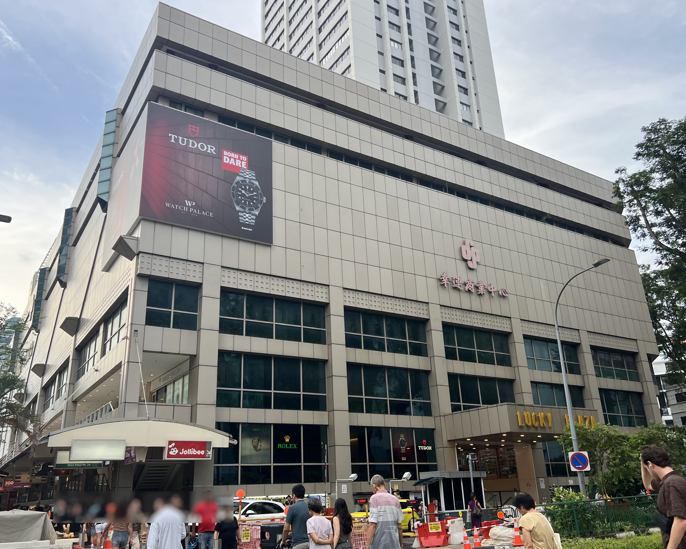
Lucky Plaza adalah pusat perbelanjaan yang terletak di Orchard, Singapura. Dibangun oleh pengembang Far East Organization, 1981
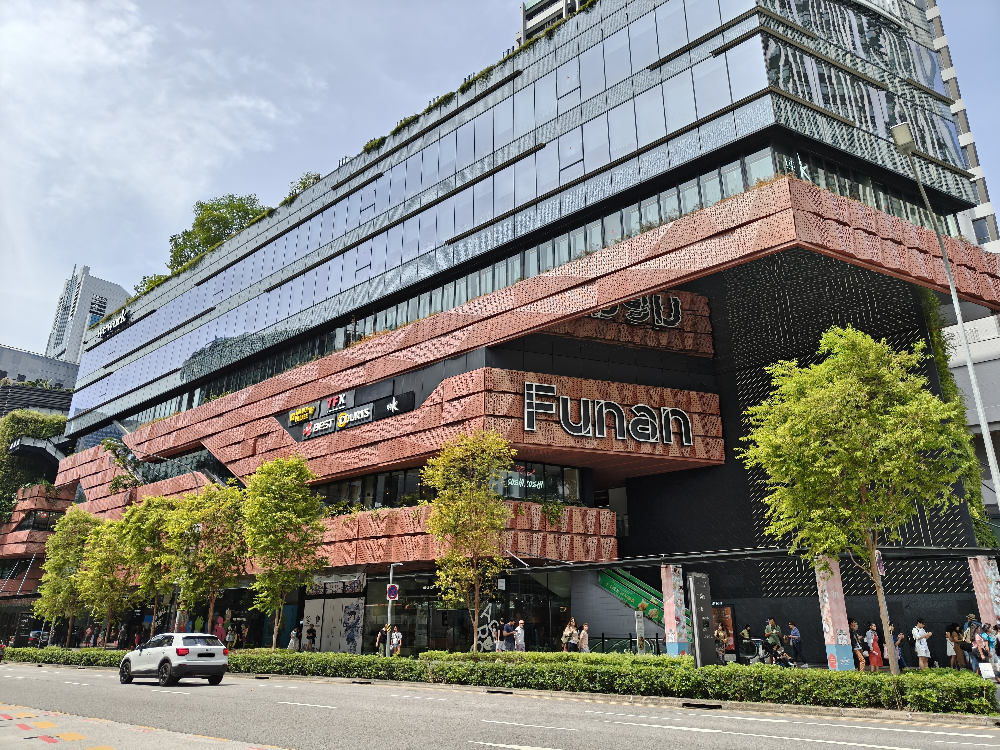
Funan adalah salah satu pusat perbelanjaan ikonik di Singapura yang terletak di kawasan Civic District.
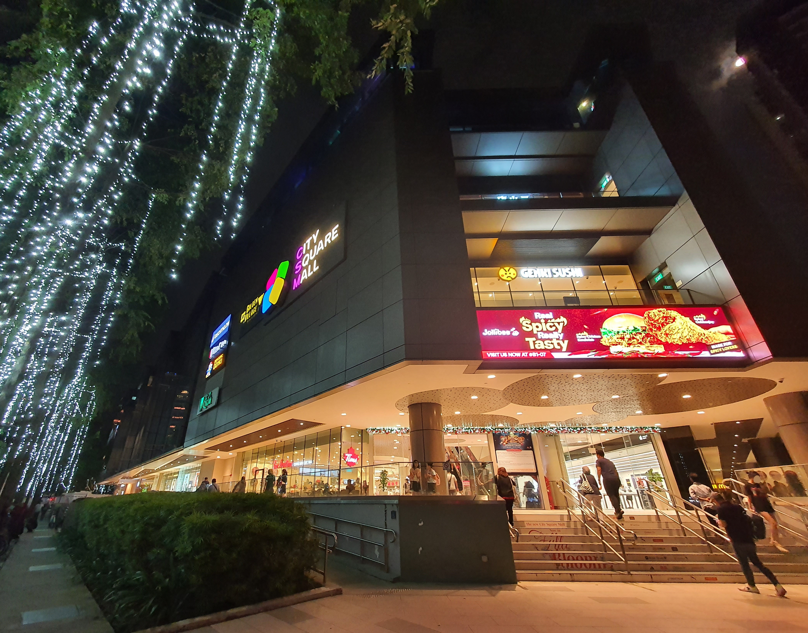
City Square Mall adalah pusat perbelanjaan yang terletak di Little India, Singapura. Dibangun oleh pengembang Far East Organization, 2009
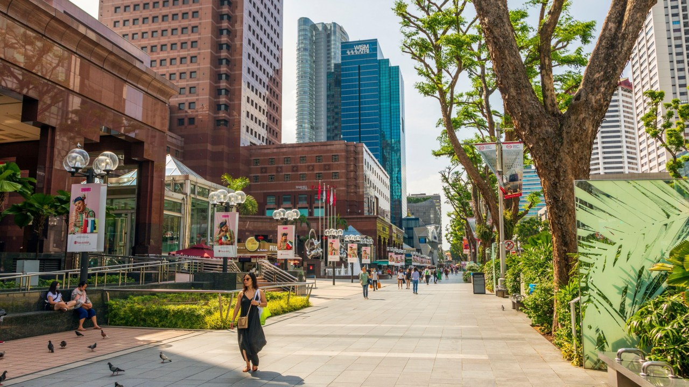
Surga belanja kelas dunia dengan deretan mal mewah, butik, dan restoran di sepanjang jalan...
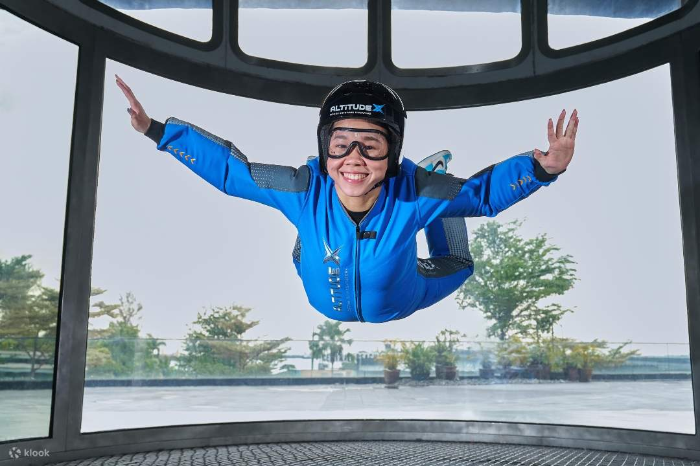
AltitudeX (sebelumnya dikenal sebagai iFly Singapore) adalah wahana rekreasi terjun payung dalam ruangan (indoor skydiving) populer yang terletak di Pulau Sentosa, Singapura.
Mass Rapid Transit (MRT) Singapura adalah sistem transportasi umum terbaik di Asia. Hampir semua destinasi wisata utama dapat dicapai dengan MRT dalam waktu singkat. Belilah EZ-Link Card di stasiun mana saja dengan deposit SGD 5 — kartu ini juga berlaku untuk bus dan dapat di-top up kapan saja.
Hindari menggunakan taksi atau ride-hailing pada jam sibuk (07.00–09.30 dan 17.30–20.00) karena tarif peak hour jauh lebih mahal. MRT beroperasi mulai pukul 05.30 hingga 00.30, menjangkau hampir seluruh penjuru pulau dengan tepat waktu dan bersih.
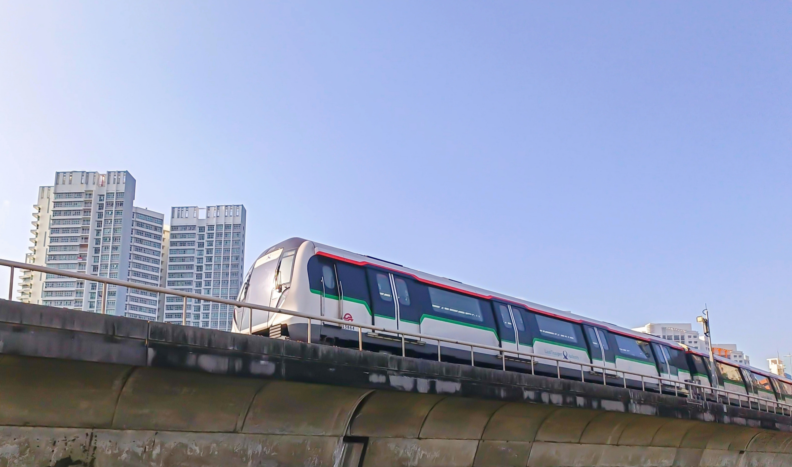
Singapura memiliki banyak destinasi wisata berkualitas yang tidak memungut biaya masuk. Gardens by the Bay (area outdoor Supertree Grove), Merlion Park, Chinatown, Little India, Kampong Glam, Haji Lane, East Coast Park, dan Singapore Botanic Gardens semuanya gratis untuk dikunjungi.
National Museum of Singapore dan berbagai galeri seni juga sering mengadakan hari masuk gratis. Cek situs Visit Singapore (visitsingapore.com) sebelum berangkat untuk mengetahui promo dan event yang sedang berlangsung selama kunjungan Anda.
Hawker Centre adalah warisan kuliner Singapura yang telah diakui UNESCO sebagai budaya tak benda umat manusia. Di sini Anda bisa menikmati hidangan autentik seperti Hainanese Chicken Rice, Char Kway Teow, Laksa, Roti Prata, dan Nasi Padang dengan harga mulai dari SGD 3–6 per porsi.
Nasi pulen kaldu ayam dengan ayam rebus lembut, saus chili, dan kecap jahe.
Kepiting besar dalam saus tomat-chili kental yang manis-pedas, nikmat dengan mantou.
Sup mie kental berbasis santan dan pasta udang dengan bumbu rempah kaya.
Roti panggang selai srikaya dan mentega, disajikan dengan telur setengah matang.
Terletak di Chinatown. Terkenal dengan Tian Tian Chicken Rice yang legendaris.
Arsitektur khas era Victoria di pusat distrik bisnis. Terkenal dengan satay street-nya.
Populer dengan hidangan seafood, sate, dan suasananya yang semarak. Sempat menjadi lokasi syuting film Crazy Rich Asians.
Favorit warga lokal untuk menikmati sajian legendaris yang resepnya turun-temurun.
Hawker Centre terbaik yang wajib dikunjungi antara lain Maxwell Food Centre di Chinatown, Lau Pa Sat di CBD, Tekka Centre di Little India, dan Old Airport Road Food Centre yang menjadi favorit warga lokal. Datanglah sebelum jam makan siang untuk menghindari antrean panjang.
Singapura dikenal dengan penegakan hukum yang ketat. Merokok di tempat umum, membuang sampah sembarangan, dan mengunyah permen karet di area publik dapat dikenakan denda besar. Tidak ada toleransi untuk vandalisme — bahkan stiker sembarangan pun bisa berujung denda.
Di MRT dan fasilitas umum, bersikaplah tertib dan tenang. Membawa makanan dan minuman ke dalam kereta dilarang keras. Berpakaian sopan saat mengunjungi tempat ibadah seperti masjid, kuil Hindu, dan pagoda Buddha — beberapa tempat menyediakan kain penutup gratis untuk tamu.
Singapura beriklim tropis dengan suhu 25–35°C sepanjang tahun, sehingga dapat dikunjungi kapan saja. Namun periode Februari–April dan Juli–September umumnya memiliki curah hujan lebih rendah, menjadikannya waktu terbaik untuk wisata luar ruangan.
Hindari berkunjung saat musim liburan sekolah internasional (Juni dan Desember) jika ingin menghindari kepadatan di destinasi populer. Sebaliknya, justru kunjungi saat festival besar seperti Chinese New Year, Deepavali, atau Hari Raya Idul Fitri untuk menyaksikan perayaan budaya yang meriah dan autentik.
Warga Negara Indonesia (WNI) tidak memerlukan visa untuk kunjungan wisata ke Singapura hingga 30 hari. Pastikan paspor Anda masih berlaku minimal 6 bulan sejak tanggal kedatangan, dan siapkan bukti reservasi hotel serta tiket pulang sebagai dokumen pendukung saat imigrasi.
Bandara Changi Singapura yang telah berkali-kali dinobatkan sebagai bandara terbaik dunia melayani penerbangan langsung dari Jakarta (CGK/HLP), Surabaya, Bali, dan kota-kota besar Indonesia lainnya. Waktu penerbangan dari Jakarta sekitar 1 jam 40 menit.